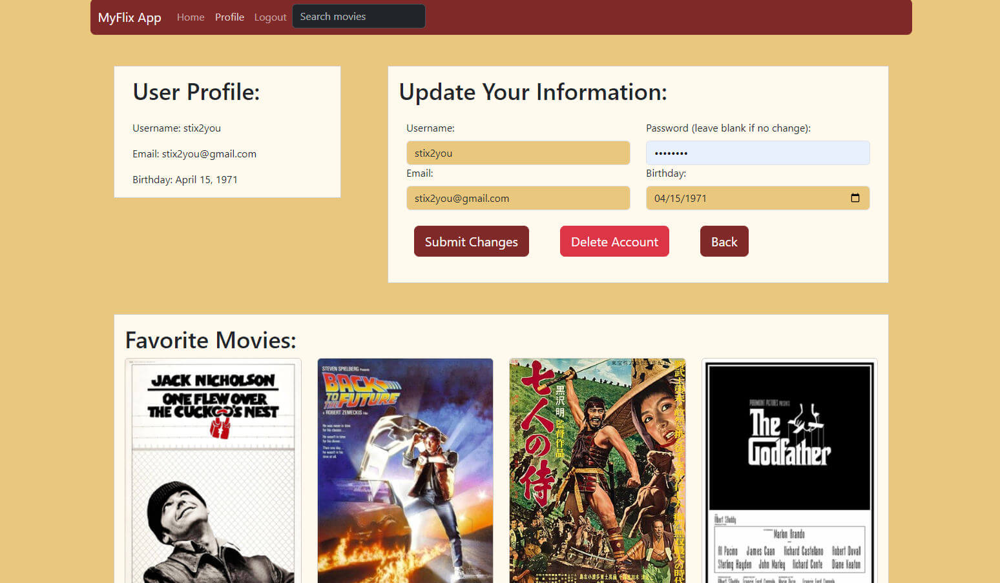
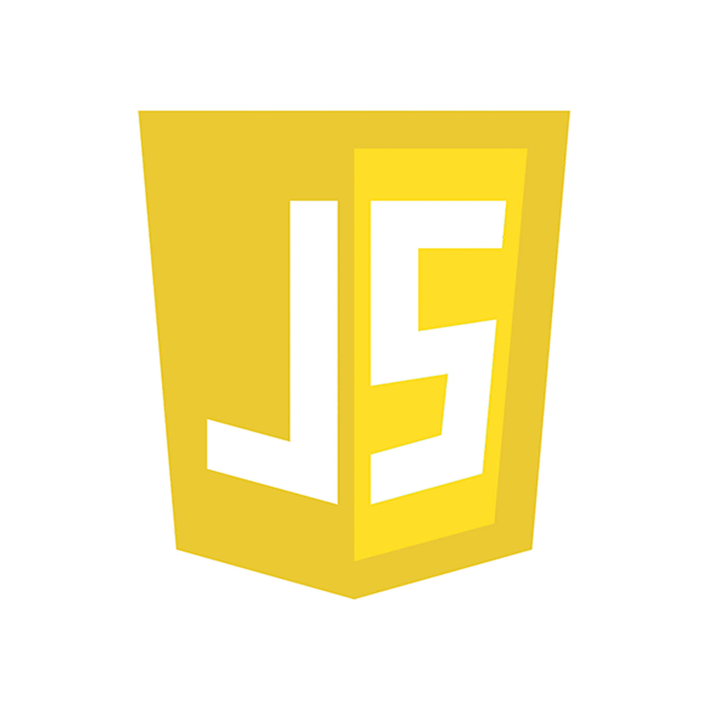

myFlix React Client Project
-
Overview
MyFlix React is a single-page web application that allows users to browse movies, view details, and manage their favorite movies. The application was developed as part of the CareerFoundry Full-Stack Web Development course, demonstrating proficiency in building Angular applications with a Node.js development backend. The project brief included specific requirements for the UI, user authentication, and data management, which were implemented using Angular components, services, and routing.
-

Purpose & Context
Movie streaming platforms have become increasingly popular, offering users a vast library of films and TV shows to enjoy. MyFlix Angular was designed to provide a encyclopedic, user-friendly interface for browsing movies, viewing details, and managing favorites. The application serves as a showcase of Angular development skills, demonstrating the ability to create responsive, interactive web applications with dynamic content and user authentication.
-
Objective
The goal of the MyFlix React project was to build a responsive, interactive web application that allows users to:
- Browse Movies: View a list of movies with corresponding images and descriptions.
- View Movie Details: Access detailed information about each movie, including the director, genre, and release date.
- Manage Favorites: Add and remove movies from a personal favorites list.
- Search Movies: Search for movies by title or genre using a search bar.
- Authenticate Users: Allow users to register, log in, and log out to access personalized features.
- React, Bootstrap, Redux: Specifically demonstrate the advantages of using React, Bootstrap, and Redux.
-
Technology Stack Decisions
The Project Brief required the use of a MERN stack (MongoDB, Express.js, React, Node.js) for the development of the MyFlix Angular application. The following technologies were chosen to meet the project requirements and demonstrate proficiency in front-end and back-end development:
React
React is a JavaScript library for building user interfaces that allows developers to create reusable UI components and manage state efficiently. By using React in the MyFlix Angular project, I was able to build a dynamic, responsive web application with a modular, component-based architecture. React's virtual DOM, one-way data binding, and component lifecycle methods provided a powerful, efficient way to create interactive user interfaces that respond to user input in real time.
React Bootstrap
Bootstrap is a popular front-end framework for building responsive, mobile-first web applications. By using React Bootstrap in the MyFlix Angular project, I was able to create responsive, mobile-friendly UI components that adapt to different screen sizes and devices. React Bootstrap's pre-built components, grid system, and utility classes provided a flexible, efficient way to design and style the application's layout, navigation, and content.
MongoDB, Mongoose, and Express.js
Like the Angular version of this app, this React version uses MongoDB as the database, Mongoose as the ODM, and Express.js as the server framework. These technologies provide a robust, scalable backend architecture that supports efficient data storage, retrieval, and manipulation. By leveraging MongoDB's flexible document-based data model, Mongoose's schema validation, and Express.js's middleware capabilities, I was able to create a secure, reliable API for managing movie data and user authentication.
Javascript
Javascript is a versatile, dynamic programming language that is widely used for building interactive web applications. By using Javascript in the MyFlix Angular project, I was able to create dynamic, responsive user interfaces that respond to user input in real time. Javascript's event-driven, functional programming style provided a flexible, efficient way to handle asynchronous operations, manage state, and interact with the DOM. By writing clean, modular Javascript code, I was able to build a scalable, maintainable web application that showcases my skills in front-end development.
-
Conclusion
Developing the MyFLix React App presented different challenges from the Angular version. The React version required a different approach to state management, routing, and component lifecycle methods. By following the project brief and implementing specific requirements, I was able to create a responsive, interactive web application that showcases my skills in front-end and back-end development. The project provided an opportunity to demonstrate proficiency in React development, user authentication, and data management, as well as the advantages of using React, Bootstrap, and Redux in building dynamic, responsive web applications.